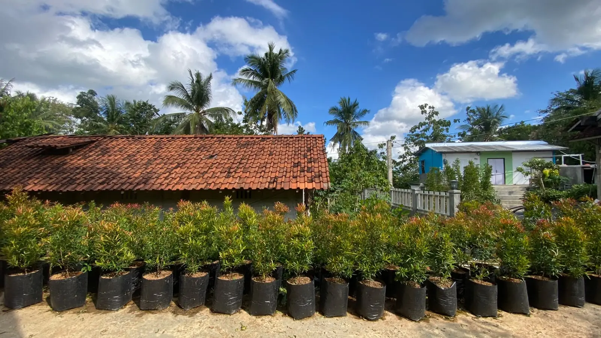

Bibit Tanaman Berkualitas, Langsung dari Kebun Kami
Pilihan lengkap sesuai kebutuhan Anda — dicek dan dikemas rapi sebelum dikirim ke seluruh Indonesia.

Kualitas yang Bisa Anda Percaya
Tiga hal ini yang selalu kami jaga di setiap pesanan.
Label untuk Varian Tertentu
Untuk bibit dengan banyak varian, seperti alpukat, kami beri label seperti SAB 034 atau TA‑21 agar tidak tertukar. Jenis lainnya tetap kami jaga kualitasnya sejak dari kebun.
Dicek Sebelum Berangkat
Bibit dipilih dan diperiksa satu per satu sebelum dikemas — bukan asal ambil dari kebun.
Pengiriman Aman
Bibit dikemas dengan cermat agar tetap segar dan tidak rusak, meski dikirim ke luar pulau sekalipun.
Pilih Bibit Sesuai Kebutuhan Anda
Belum ada harga di setiap kartu — bukan lupa, tapi karena stok dan harga bergerak ngikutin musim panen. Tekan "Tanya via WA" buat cek yang terbaru.


Alpukat Black Avocado
Kulit gelap saat matang, tekstur creamy, banyak dicari.
Tanya via WA →

Durian Duri Hitam
Varietas durian populer dengan ciri khas kulit berduri gelap.
Tanya via WA →


Kamboja Jepang (Adenium)
Batang unik menggembung, bunga cantik, cocok untuk pot.
Tanya via WA →


Ketersediaan bibit di atas mengikuti stok kebun yang berjalan. Untuk kepastian stok terkini, silakan tanyakan langsung ke admin sebelum memesan.
Apa Kata Pelanggan Kami
Kami memiliki rating 4.9 dari 12 ulasan di Google Maps. Berikut beberapa cerita dari pelanggan yang telah menanam bibit dari kami.
"Recommended buat yang lagi cari bibit buah di Purworejo. Pilihannya lumayan lengkap."
"Sengaja dari Purworejo kota ke Kemiri gara-gara dibilang bibit durennya bagus. Alhamdulillah nggak zonk."
"Insya Allah kalau butuh bibit lagi, balik ke sini lagi. Masih pengen nambah alpukat soalnya."
"Awalnya cuma nyari pucuk merah buat pagar, eh pulangnya malah bawa alpukat sama duren juga."
"Jangan keburu muter balik — tinggal lurus aja, nanti ketemu Khanza Bibit di ujung utara. Pas sampai langsung kalap lihat bibitnya."
"Nyari bibit alpukat di Purworejo, untung nemu Khanza Bibit. Pilihannya banyak, akhirnya ambil Aligator."
Empat Langkah Mudah
Pilih Bibit
Lihat katalog kami, lalu tentukan jenis dan jumlah bibit yang Anda butuhkan.
Hubungi Admin
Chat kami via WhatsApp untuk mendapatkan info harga dan stok terbaru.
Lakukan Pembayaran
Setelah sepakat, lakukan pembayaran sesuai arahan dari admin kami.
Bibit Dikirim
Bibit dikemas dengan aman dan dikirim langsung ke alamat Anda.
Yang sering ditanyakan
Kenapa harga bibit tidak dicantumkan di sini?
Harga dan stok bibit kami dapat berubah mengikuti musim. Untuk mendapatkan info yang paling akurat dan terbaru, silakan hubungi admin kami langsung via WhatsApp.
Bagaimana kalau bibit rusak saat pengiriman?
Kami pastikan bibit dalam kondisi terbaik dan dikemas dengan aman sebelum berangkat. Untuk pengiriman via jasa ekspedisi, kondisi selama perjalanan berada di luar kendali kami — namun tetap hubungi admin jika ada kendala, akan kami bantu carikan solusi terbaik. Untuk pengiriman yang kami antar sendiri, kondisi bibit sampai tujuan menjadi tanggung jawab kami.
Apakah bisa kirim ke luar Jawa?
Bisa. Kami siap mengirim bibit ke seluruh Indonesia, dengan pengemasan yang aman untuk perjalanan jauh.
Apakah bisa datang langsung ke kebun?
Tentu. Kebun kami berlokasi di Kec. Kemiri, Kabupaten Purworejo, dan buka 24 jam. Kami sarankan untuk menghubungi kami terlebih dahulu sebelum berkunjung.
Tips Merawat Bibit dari Khanza
Sebelum atau setelah membeli, baca dulu panduan dasar merawat bibit sesuai kategorinya.